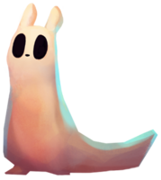
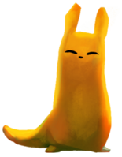
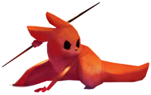
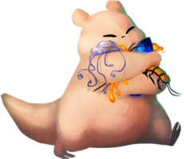
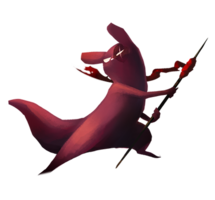
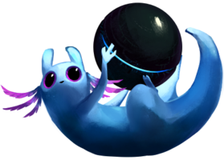
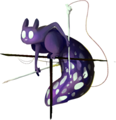
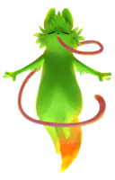

The Survivor
The Survivor is the most "normal" slugcat, and is the first one played by most players. The survivor has
no unique perks unlike the other slugcats, but it also has none of the downsides. It is able to eat most
things except for large predator creatures, and is able to navigate the world with relative
ease.
The Survivor's main goal is to locate their family after being separated.

The Monk
The Monk is perhaps the 'easiest' of all the slugcats, but still often struggles to survive the harsh
world. The Monk is unable to harm any other creatures, so their diet is restricted to fruits and their
ability to fight is not very good. However, the population of dangerous creatures is greatly reduced
while playing as the Monk.
The Monk's main goal is to locate their missing older sibling, the
Survivor.

The Hunter
The Hunter was genetically engineered by a still-functioning supercomputer that was created by the
Ancients before they died out. The Hunter has greatly improved combat capabilities, making them better
at throwing spears and evading predators. However, the hunter is unable to eat any fruits and must
sustain themselves on large creatures that they kill.
The Hunter's main goal is to deliver a
package to a different heavily-damaged supercomputer in order to repair it.

The Gourmand
The Gourmand loves food (perhaps too much), which means they require much more food than other slugcats
in order to survive. They are also large and slow, even running out of breath after moving too quickly
for too long. However, the Gourmand's size allows them to crush many creatures by falling on them, and
they are able to throw spears with incredible force.
The Gourmand's main goal is to consume at
least one of every edible thing in the world, including the largest predators.

The Artificer
The Artificer is able to create and attach explosives to spears and rocks, making them an incredibly
powerful slugcat. However, many of the creatures in the world view the Artificer as a threat, leading to
greatly increased hostility.
The Artificer's main goal is to get revenge on the Scavenger tribes
for the death of their children, but conversations with some key figures may lead the Artificer in a
more peaceful direction.

The Rivulet
The Rivulet is significantly more mobile than the other slugcats, allowing them to run faster and jump
higher. However, they are unable to hold spears and their diet is restricted to fruit so they spend most
of their time running away from threats. Cycles of Rain are also much faster when playing as the Rivulet
compared to other slugcats, so the time available to travel between safe areas is much
shorter.
The Rivulet begins with no clear goal, but they eventually take on a very important role
in repairing the heavily-damaged supercomputer.

The Spearmaster
The Spearmaster is able to produce an unlimited amount of spears from the spines on their back, making
them very adept at combat. They have no mouth, so they are forced to absorb nutrients from creatures
that they stab with spears.
Much like the Hunter, the Spearmaster was created by a distant
supercomputer, and their goal is to deliver a message to one of the two local supercomputers.

The Saint
The Saint's journey takes place much later than the other slugcats. The two local supercomputers have
almost entirely stopped functioning, and the world appears to be entering an ice age. The Saint is
unable to fight against other creatures in any way, but their long tongue can be used to swing from
ceilings in order to avoid predators.
The Saint's goal is unclear at first, but conversations
with the remnant souls of Ancients leads them on a journey to end the cycle of rebirth that has
prevented the world from progressing.
